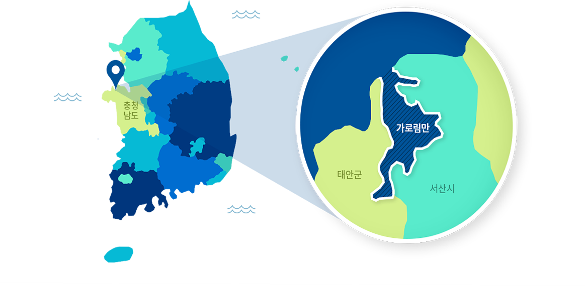
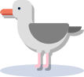
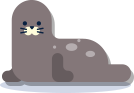

숨쉬는 갯벌, 새로운 정원
가로림만 해양정원
가로림만 해양정원이란?
세계 5대 서해갯벌지역, 국내 최대·최초 해양생물보호구역인 가로림만.
가로림만의 천혜의 해양환경과 생태계를 국가적인 자원으로 조성해
해양정원이 만들어집니다.

가로림만은 만입구가 북쪽을 향하는 독특한 지형으로
149종의 대형저서동물들이 살고 있으며
습지보호지역 기준면적의 9배에 달하는 염생식물이 분포하는 생태학적 가치가 높은 곳입니다.
이처럼 높은 생물다양성과 해양생태계 건강도를 가진 가로림만은
우리 미래를 위해 체계적으로 관리하고 지켜나가야 합니다.
149종의 대형저서동물들이 살고 있으며
습지보호지역 기준면적의 9배에 달하는 염생식물이 분포하는 생태학적 가치가 높은 곳입니다.
이처럼 높은 생물다양성과 해양생태계 건강도를 가진 가로림만은
우리 미래를 위해 체계적으로 관리하고 지켜나가야 합니다.
- 5 세계 5대 서해갯벌
- 149 대형저서동물 149종 서식
-  1,202 법적보호 바닷새 5종 서식 1,202개 출현
-  1 국내유일의 점박이 물범 육역관찰 가능지역
가로림만 해양정원